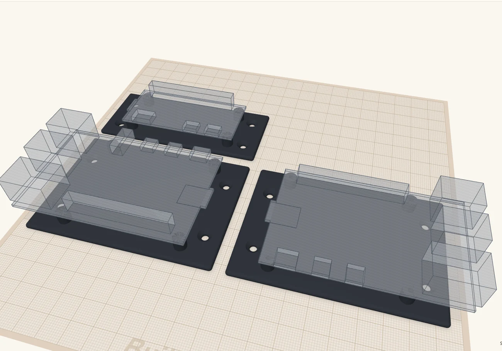
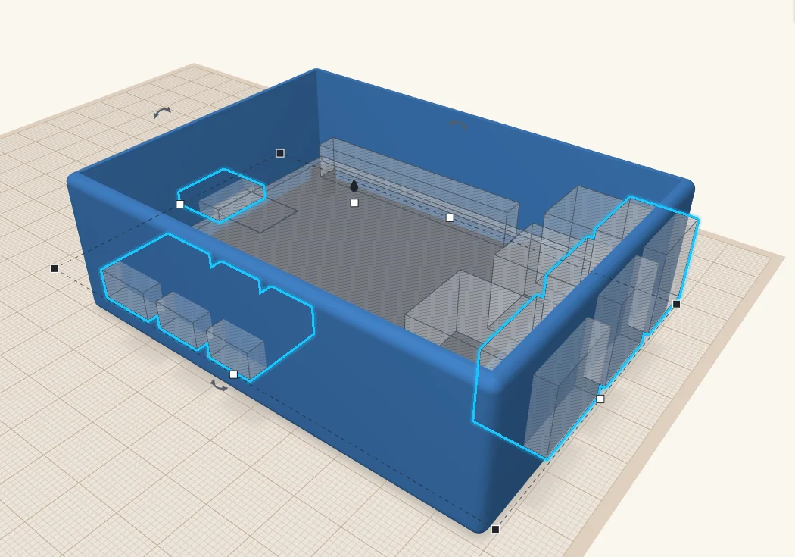
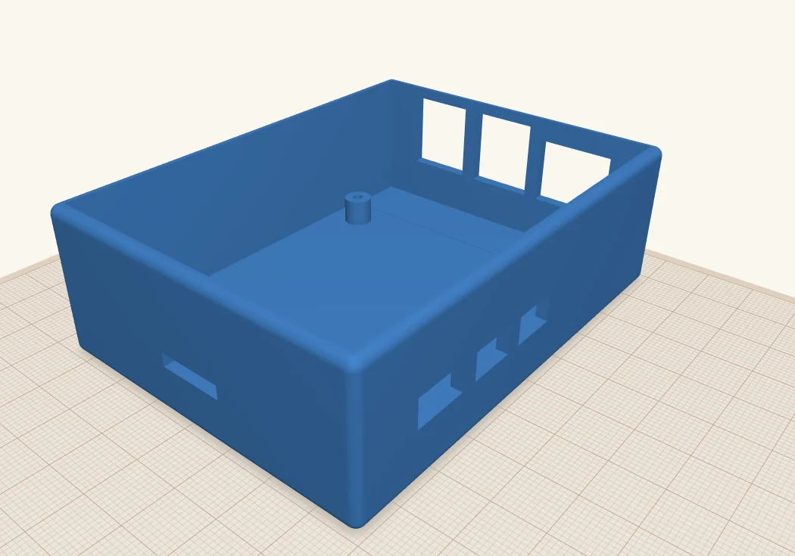
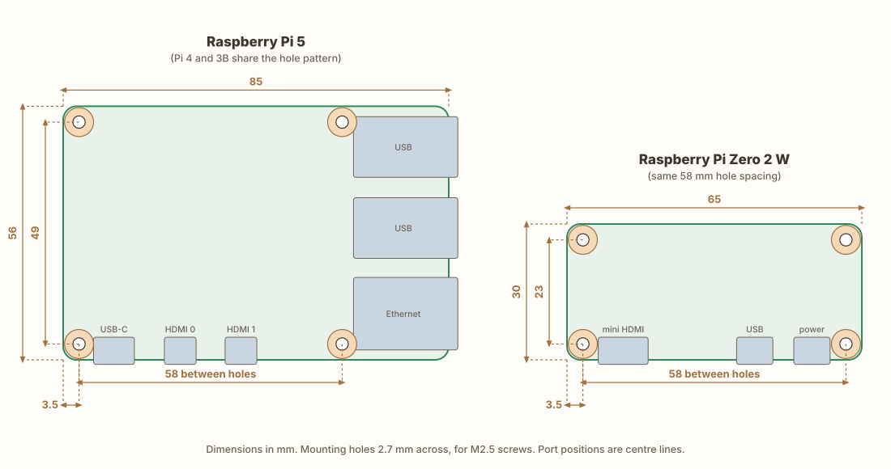
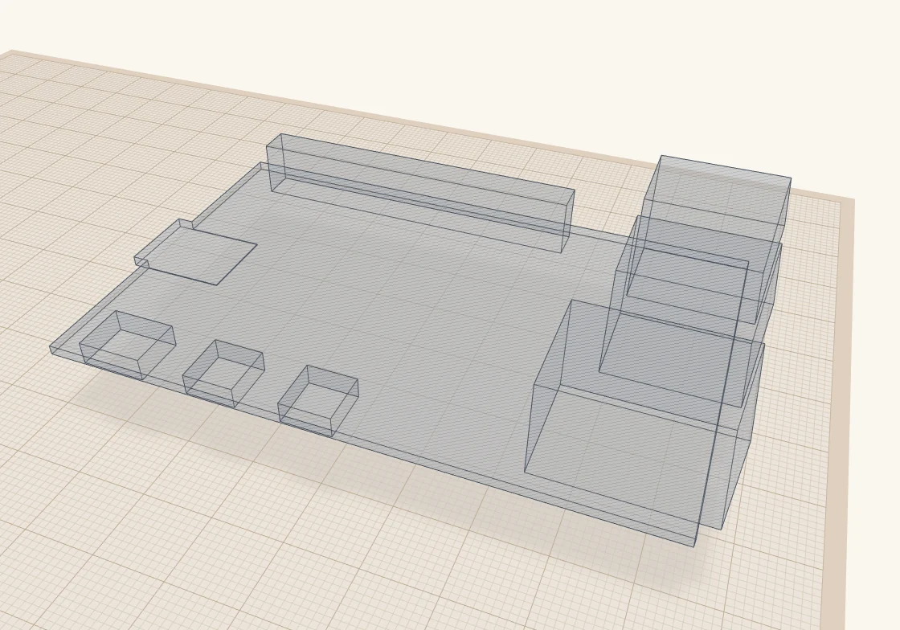
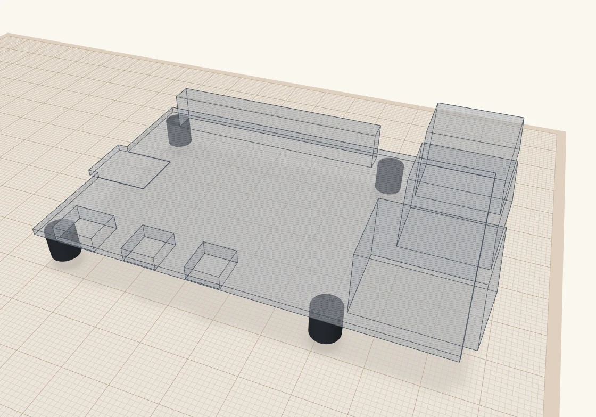
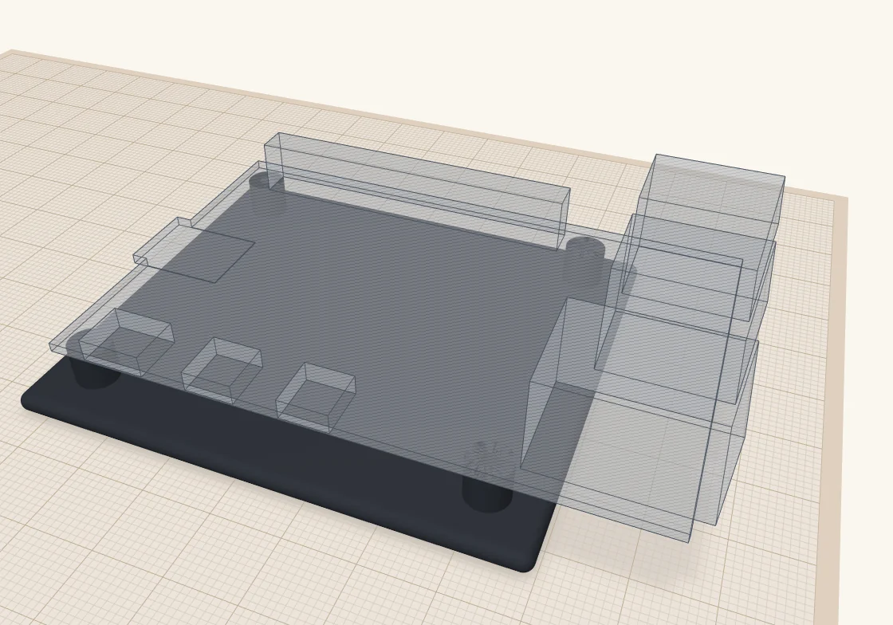

Raspberry Pi mounts that line up the first time
Standoffs, a plate, and a see-through Pi on top that shows exactly where every port goes. Then I drop it in a case and let it cut the openings for me.
 Scotti
Scotti
· 5 min read
I use Raspberry Pi boards in a lot of my projects, and more often than not the Pi ends up inside a case I've built for that project. That means two things have to come out right.
The mounting holes in the Pi have to line up with the posts in the case. And the case has to leave room for the board itself, including all the ports: Ethernet, USB, power, HDMI. Usually you want some of those reachable from outside, so the case needs openings in exactly the right places.
Get either one wrong and you're printing the case again. So one of the first things I did with ScottiCAD was model the Pi.

A mount with the board built in
Each mount is three simple things.
Standoffs
One cylinder under each of the board's mounting holes, with a pilot hole down the middle for the screw.
A plate
Ties the standoffs together, so the mount is one part you can print or drop into a case.
The board, as a hole
The Pi itself, with its ports, as a see-through ghost sitting on the standoffs, exactly where the real one will sit.
That last one is the trick. The board is modelled as a hole. Since your case shouldn't have anything in the space where the Pi goes anyway, a hole there costs nothing. But it gives you a handy reference for where every port sits, and as you'll see in a minute, it can do real work.
I keep the mount and the board outline in a bundle group (Ctrl+B). A bundle moves as one piece but doesn't combine its parts, so the outline just rides along as a ghost and isn't included when you export the mount for printing.
Dropping it into a case
Here's what that looks like in practice. This is one of my project boxes with the Pi 5 mount dropped in. The box is built just like the one in How I build a project box, sized to fit the mount with a little room to spare.
You can see straight away where the ports meet the walls. In the picture, the Ethernet and USB jacks run into the wall on the right, and the USB-C and two HDMI connectors sit against the wall on the left.
For each port I want to reach from outside, I make an opening: a hole box the size of the port, a little bigger all round, pushed out through the wall. The ghost tells me exactly where it goes, so there's no measuring. I make the openings for the USB-C and HDMI ports a good deal bigger than the jacks, because the plugs that go into them have chunky bodies that need room too. I also cut a slot in the end wall, under the board, for the microSD card.

Then select everything, the box, the mount and the openings, and press Ctrl+G. ScottiCAD cuts the openings through the walls, merges the plate and standoffs into the floor, and the board's outline carves out the space the Pi needs, ports and all.


Add a lid the same way as in the project box tutorial and it's ready to print. If you want to start from mine, here's the design: pi5-case.scotticad.
How I built the mounts
Start with the drawing
Raspberry Pi publishes a mechanical drawing for each board: the Pi 5, the Pi 4 and the Pi Zero 2 W. They give the size of the board, where the mounting holes are, and where the main ports sit along the edges. Everything I needed is on one page.

A couple of things worth knowing. The Pi 5, Pi 4 and Pi 3B all share the same hole pattern, 58 × 49 mm, so one mount works for all three (only the ports move around). The Zero uses the same 58 mm spacing, just with the holes 23 mm apart the other way. The holes are 2.7 mm across, for M2.5 screws.
Turn it into holes
I drew the board as a 1.4 mm box, then added a box for each port and for the tall parts on top: USB, Ethernet, power, HDMI, the GPIO header. Then I grouped them all and turned the group into a hole.
The ports stick out past the edge of the board, the way the real ones do. That's what lets them reach into the case walls later.

Add the standoffs
Next, a cylinder under each mounting hole. Mine are 6 mm tall, which leaves room for the microSD card and the parts on the underside, and 6.2 mm across. Each has a 2.2 mm pilot hole, so an M2.5 screw cuts its own thread into the plastic. If you'd rather use brass heat-set inserts, make the hole 3.6 mm instead.

Add the plate
Last, a 3 mm plate under the standoffs, big enough to cover them with a 5 mm margin, and the mount is done. I bundle it with the outline so they always move together.

Make your own
All of this is a script, so you don't have to build it by hand. board-mount.star is in ScottiCAD's examples, and it makes mounts for the Pi 4, Pi 5, Pi Zero 2 W, Pico and Arduino Uno, or for your own board if you add its size, holes and ports. The settings at the top let you choose:
- which boards to make, laid out side by side on the build plate;
- how tall the standoffs are;
- self-tapping screws or heat-set inserts;
- countersunk screw holes to fix the plate down, a VESA 75 or VESA 100 pattern to hang it on the back of a monitor, or no fixing holes at all.
Run it from the Scripting console, or open the ready-made design, board-mount.scotticad.
One word of warning: the mounting holes and port positions come straight from the drawings, but the heights of the ports are my own approximations, and Raspberry Pi says their dimensions are for reference too. Before you print a whole case, check the openings against a real board, or print a quick test of just the wall with the openings in it.
More from Scotti's Corner
- How I build a project box 24 October 2026
- Why I wrote ScottiCAD 24 October 2026